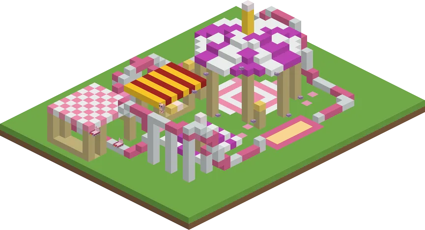
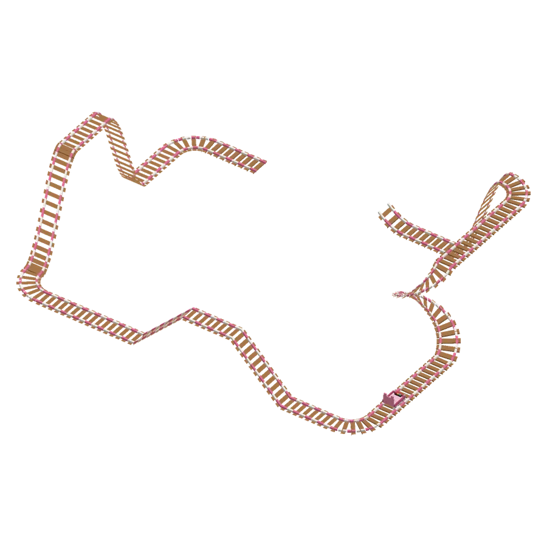
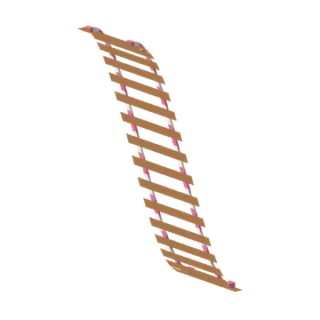
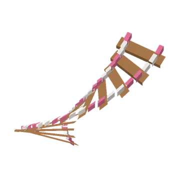
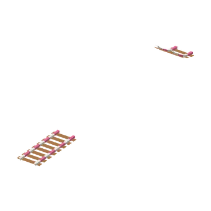
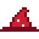
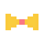
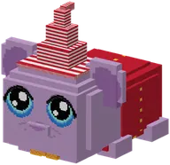

A roller coaster full of vads drops and guh corkscrews: every ride earns a kermis ticket.
Een achtbaan vol vadsdrops en guhkurkentrekkers: elk rondje een kermisbon.

The guh kermisDe Guhkermis
Somewhere in the Guhmension stands the rare guh kermis: a fair with a real sled coaster around it. A corkscrew tower, a steep drop, a jump over a kaas saus pool, a camel hump of 8 high and a little hill. In the middle: a carousel, a tent, lampgions and the stall of the Kermis-guh. The super compass (Minigames) shows the way.
Ergens in de Guhmensie staat de zeldzame Guhkermis: een kermis met een echte slee-achtbaan eromheen. Een kurkentrekkertoren, een steile drop, een schans over een kaassausbad, een kamelenbult van 8 hoog en een klein heuveltje. In het midden: een draaimolen, een tent, lampgions en het kraampje van de Kermis-guh. Het superkompas (Minigames) wijst de weg.
Get into one of the two sleds at the station, click the blinking buttons (right-click) and press Start. Every lap over the finish line gives everyone in the sled a kermisbon. Your very first lap also gives a prize bag: 3 balloons, 4 kaashoning, 8 guh crystals and 2 extra kermisbonnen. On a coaster the sled goes faster downhill and slower uphill, and it leans into the bends. Get out up high? You float down.
Stap in een van de twee sleeën op het station, klik op de knipperende knopjes (rechtermuisklik) en druk op Start. Elk rondje over de finish geeft iedereen in de slee een kermisbon. Je allereerste rondje geeft ook een prijzenzakje: 3 ballonnen, 4 kaashoning, 8 guhkristallen en 2 extra kermisbonnen. Op een achtbaan gaat de slee bergaf harder en bergop langzamer, en hij helt mee in de bochten. Hoog uitstappen? Dan zweef je naar beneden.


Vadsdrop
A steep coaster hill: 8 up over 4 blocks, flat at both ends. Sneak (on the end of a track) to go down.Een steile achtbaanhelling: 8 omhoog over 4 blokken, vlak aan beide kanten. Sluip (op het eind van een baan) om te dalen.

Guhkurkentrekker
Half a turn going 4 up: you come back alongside, 3 blocks over. Sneak for a left one; look down while laying it to go down. Two of them make a corkscrew tower.Een halve draai, 4 omhoog: je komt 3 blokken verderop terug. Sluip voor links; kijk omlaag tijdens het leggen om te dalen. Twee achter elkaar maken een kurkentrekkertoren.

Vahoegschans
A little ramp: the sled flies 10 blocks through the air and lands on the next rail. Click the end of the ramp and the next piece goes right onto the landing spot.Een schansje: de slee vliegt 10 blokken door de lucht en landt op de volgende rail. Klik op het eind van de schans en het volgende stuk komt precies op de landingsplek.
Also new: every guh compass now really points to the nearest structure of its kind (it used to search around 0,0), and the guh blossom tree has a guh-fur bark, sometimes with a little face.
Ook nieuw: elk guhkompas wijst nu echt naar het dichtstbijzijnde bouwwerk van zijn soort (hij zocht per ongeluk rond 0,0), en de guhbloesemboom heeft een schors van guhvacht, soms met een gezichtje.
Prizes: clothesPrijzen: kleding

Vahoege kermishoed 4 kermisbonnen Kermisjasje 6 kermisbonnen
Kermisjasje 6 kermisbonnen
Guhkermisstrik 2 kermisbonnen
See alsoZie ook
 GuhkermisStructuresBouwwerken
GuhkermisStructuresBouwwerken Kermis-guhCharactersPersonages
Kermis-guhCharactersPersonages
Clothing set: De guhkermisKledingset: De guhkermisClothesKleding